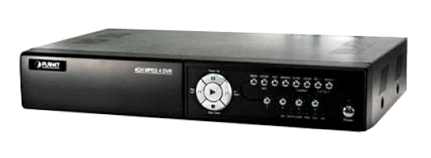

Installation, configuration and support in systems security cameras. We have all types of analog cameras, IP or Wi-Fi, as well as recording equipment DVR or NVR.
Interior Cameras
The simplest cameras that we can find are the interior. They do not need a waterproof case or night vision since there is usually permanent lighting during the hours that monitoring is needed.
Vandal Proof Cameras
The much-traveled public areas and local especially vulnerable to robbery and assault are places indicated for use in vandal proof cameras. These cameras are mounted with a shock resistant casing and remain fixed to continue recording everything that happens. They are perfect for parking lots, stores, discos, bars and outdoor shops.
Cameras with Zoom and movement (PTZ)
These cameras are ideal for installations of CCTV (Closed Circuit Television) having one person monitoring, or for large areas that are monitored following a motion path.
Infrared Cameras
If they are to be placed in a location with poor lighting or surveillance is needed 24 hours, the best option is with night vision cameras. These cameras record full color during the day and in low light conditions, automatically turn on their infrared to continue recording in black and white.
IP Cameras
IP cameras are complete systems that connect directly to the Internet and display the image of where it is placed. With an IP camera you can use your phone to see your home from anywhere in the world, without additional equipment.
Hidden Cameras
If you need complete discretion to monitor somewhere in your home or business, we recommend spy cameras. These are placed within an object (smoke detectors, motion sensors, mirrors, screws, plugs, etc.) and go unnoticed to all persons traveling in front of them.

Remote monitoring
We offer the best systems to keep "view" the security of your business, home or company, from anywhere you are.
